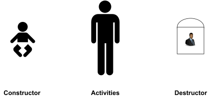
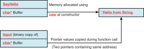
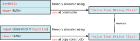
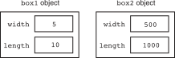
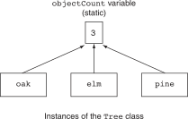

3 MORE ABOUT CLASSES
Object Life Cycle

3.1 Constructors
Definition
A constructor is a special member function that is automatically called when a class object is created.
- Remember that when we define a local variable (primary data type) in C++, the memory is not automatically initialized.
Constructor, - It is automatically invoked when a new object is created. - There is no returned value, even a void. - A class can have more than one constructor (overload) - Name of the constructors must be the same as the class name.
Declaring and Implementing a Constructor
class Human {
public:
Human() {
// constructor code here
Name = "Le Thi Dep";
DateOfBirth = "01/01/1990";
PlaceOfBirth = "Ha noi";
Gender = "female";
}
...
};When and How to Use Constructors
- A constructor is a perfect place for us to initialize class member variables such as integers, pointers, and so on to known initial values
#include <iostream>
#include <string>
using namespace std;
class Human {
private:
// Private member data:
string Name;
int Age;
public:
// constructor
Human() {
Age = 0;
}
void SetName (string HumansName) {
Name = HumansName;
}
void SetAge(int HumansAge) {
Age = HumansAge;
}
void IntroduceSelf() {
cout << "I am " + Name << " and am ";
cout << Age << " years old" << endl;
}
};
int main() {
Human FirstMan;
FirstMan.SetName("Adam");
FirstMan.SetAge(30);
Human FirstWoman;
FirstWoman.SetName("Eve");
FirstWoman.SetAge (28);
FirstMan.IntroduceSelf();
FirstWoman.IntroduceSelf();
}Overloading Constructors
- Default constructor (if no constructor is implemented, the compiler will issue a default constructor; if there is at least one constructor, the default constructor will not be created by the compiler)
- No parameters
- Invoke other default constructors of data members if they are objects.
- Doesn’t initialize other data members if they are not objects.
- Constructor with no parameters
- Constructor with parameter(s)
- Constructor with default parameter(s)
- Copy constructor
Example
- As constructors can be overloaded just like functions, we can create a constructor that requires
Humanto be created with a name as a parameter, for instance:
class Human {
public:
Human() {
// default constructor code here
}
Human(string HumansName) {
// overloaded constructor code here
}
};
...
Human firstMan;
Human firstWoman("Eve");Class Without a Default Constructor
class CDate
{
public:
CDate(int day, int month, int year);
...
private:
...
};int main() {
CDate today; // compile error
...
return 0;
}- Advice: always define our own default constructor!
this Pointer
this is a reserved keyword applicable within the scope of a class that contains the address of the object. In other words, the value of this is &object
thisis a constant pointer, we cannot modify it within a member function.
class Human {
...
void SetAge(int HumansAge) {
this->Age = HumansAge; // same as Age = HumansAge
}
...
}sizeof() a Class
The operator sizeof() is valid for classes and basically reports the sum of bytes consumed by each data attribute contained within the class declaration. Depending on the compiler we use, sizeof() might or might not include padding for certain attributes on word boundaries.
int main() {
Human Tom;
cout << "sizeof(Human) = " << sizeof(Human) << endl;
cout << "sizeof(Tom) = " << sizeof(Tom) << endl;
}3.2 Destructor
Definition
A destructor is a member function that is automatically called when an object is destroyed.
- Destructor is always invoked when an object of a class goes out of scope or is deleted via
deleteand is destroyed - Each class can have at most one destructor
- The destructor name is the name of a class preceded by a tilde sign (
~) - Destructor has no return type (even
void) - Destructor frees the resources used by the object (allocated memory, file descriptors, semaphores etc.)
Example
- Destructor for
Humanclass
class Human {
public:
~Human() {
// destructor code here
}
};When and How to Use Destructors
- Destructor is the ideal place to reset variables and release dynamically allocated memory and other resources.
#include <iostream>
using namespace std;
class MyString {
private:
char* Buffer;
public:
// Constructor
MyString(const char* InitialInput) {
if(InitialInput != NULL) {
Buffer = new char [strlen(InitialInput) + 1];
strcpy(Buffer, InitialInput);
}
else
Buffer = NULL;
}
// Destructor: clears the buffer allocated in constructor
~MyString() {
cout << "Invoking destructor, clearing up" << endl;
if (Buffer != NULL)
delete [] Buffer;
}
int GetLength() {
return strlen(Buffer);
}
const char* GetString() {
return Buffer;
}
};
int main() {
MyString SayHello("Hello from String Class");
cout << "String buffer in MyString is " << SayHello.GetLength();
cout << " characters long" << endl;
cout << "Buffer contains: ";
cout << "Buffer contains: " << SayHello.GetString() << endl;
}3.3 Member Initialization
Initialization vs. Assignment
- Distinguish between Assignment and Initialization
| Initialization | Assignment |
|---|---|
int a = 2; |
a = 3; |
double b(4.0); |
a = 4; |
b = 2.0; |
|
b = 1.0; |
Members Initialization
- This is members initialization
class CDate {
private:
int m_iDay, m_iMonth, m_iYear;
public:
CDate();
CDate(int day, int month, int year):
m_iDay(day), m_iMonth(month), m_iYear(year)
{}
~CDate();
...
};Mandatory Members Initialization
- References
- Pointers
- Const members
- Sub-objects which require arguments in constructors
class Human {
private:
Ancestor& ref; // reference member
Descendant* ptr; // pointer member
const int MAX; // const member
vector arr; // object member
public:
Human(Ancestor& r, Descendant *p) :
ref(r), ptr(p), MAX(100), arr(MAX) {}
};3.4 Copy Constructor
Definition
A copy constructor is a special constructor that is called whenever a new object is created and initialized with another object’s data.
- Default copy constructor: if there is no copy constructor, a default copy constructor will be generated. Default copy constructor performs a bitwise copy from the source to the current object (shallow copy).
- Our own copy constructor
When copies of objects are made
- A variable is declared which is initialized from another object
Person p(" Mickey"); // constructor
Person r(p); // copy constructor
Person q = p; // copy constructor
p = r; // assignment operator- A value parameter is initialized from its corresponding argument.
doSomething(p); // copy constructor- An object is returned by a function.
return p; // copy constructorShallow Copying and Associated Problems
- When an object of the class
MyStringis copied, the pointer member is copied, but not the pointed buffer, resulting in two objects pointing to the same dynamically allocated buffer in memory.
void UseMyString(MyString Input) {
cout << "String buffer in MyString is " <<Input.GetLength();
cout << " characters long" << endl;
cout << "Buffer contains: " << Input.GetString() << endl;
}
int main() {
MyString SayHello("Hello from String Class");
// Pass SayHello as a parameter to the function
UseMyString(SayHello);
return 0;
}
Deep Copy Using a Copy Constructor
- C++ requires that a copy constructor’s parameter be a reference object.
class MyString {
...
// Copy constructor
MyString(const MyString& CopySource) {
if(CopySource.Buffer != NULL) {
// ensure deep copy by first allocating own buffer
Buffer = new char [strlen(CopySource.Buffer) + 1];
// copy from the source into local buffer
strcpy(Buffer, CopySource.Buffer);
}
else
Buffer = NULL;
}
...
}
3.5 Unnamed Object
Overview
An Unnamed object (anonymous object) is essentially an object that has no name
class Wallet {
private:
int cents;
public:
Wallet(int cents): cents( cents ) {}
int getCents() { return cents; }
};
int main() {
Wallet momo(6); // normal object
Wallet(8); // unnamed object
}- Because they have no name, there’s no way to refer to them beyond the point where they are created.
- Consequently, they have “expression scope”, meaning they are created, evaluated, and destroyed all within a single expression.
- Returned object of a function is also considered as an unnamed object.
Wallet createWallet(int cents) {
return Wallet(cents);
}
...
cout << createWallet(5).getCents() << endl;3.6 Static Members
Instance and Static Members
Each instance of a class has its own copies of the class’s instance variables. - If a member variable is declared static, however, all instances of that class have access to that variable. - If a member function is declared static, it may be called without any instances of the class being defined.

Static Member Variables
Syntax
static DataType VariableName;
- Even though static member variables are declared in a class, they are actually defined outside the class declaration. The lifetime of a class’s static member variable is the lifetime of the program. This means that a class’s static member variables come into existence before any instances of the class are created.
UML

Listing 1
#include <iostream>
using namespace std;
class Tree {
private:
static int objectCount; // Static member variable.
public:
// Constructor
Tree() { objectCount++; }
// Accessor function for objectCount
int getObjectCount() const { return objectCount; }
};
// Definition written outside the class.
int Tree::objectCount = 0;
int main() {
Tree oak, elm, pine;
cout << "We have " << pine.getObjectCount()
<< " trees in our program!\n";
return 0;
}
Static Member Functions
Syntax
static ReturnType FunctionName (ParameterTypeList);
- A function that is a static member of a class cannot access any nonstatic member data in its class.
- A class’s static member functions can be called before any instances of the class are created. This means that a class’s static member functions can access the class’s static member variables before any instances of the class are defined in memory. This gives you the ability to create very specialized setup routines for class objects.
Listing 2
#include <iostream>
using namespace std;
class Tree {
private:
static int objectCount; // Static member variable.
public:
// Constructor
Tree() { objectCount++; }
// Static function for objectCount
static int getObjectCount() { return objectCount; }
};
// Definition written outside the class.
int Tree::objectCount = 0;
int main() {
Tree oak, elm, pine;
cout << "We have " << Tree::getObjectCount()
<< " trees in our program!\n";
return 0;
}3.7 Friends of Classes
Definition
A friend is a function or class that is not a member of a class, but has access to the private members of the class
- Friend functions or classes give a flexibility to the class.
- It doesn’t violate the encapsulation of the class.
- Friendship is “directional”. It means if class A considers class B as its friend, it doesn’t mean that class B considers A as a friend
Syntax
friend ReturnType FunctionName (ParameterTypeList)
friend class ClassName
UML

Listing 3
class Human {
private:
string Name;
int Age;
friend void DisplayAge(const Human& Person);
public:
Human(string InputName, int InputAge) {
Name = InputName;
Age = InputAge;
}
};
void DisplayAge(const Human& Person) {
cout << Person.Age << endl;
}
int main() {
Human FirstMan("Adam", 25);
DisplayAge(FirstMan);
return 0;
}3.8 Workshop
✒ Quiz
What is the
thispointer?When I create an instance of a class using
new, where is the class created?My class has a raw pointer
int *that contains a dynamically allocated array of integers. Doessizeofreport different sizes depending on the number of integers in the dynamic array?All my class members are private, and my class does not contain any declared
friendclass or function. Who can access these members?Can one class member method invoke another?
What is a constructor good for?
What is a destructor good for?
💻 Exercises
Programming Challenges of chapter 13
3. Car Class
5. RetailItem Class
Programming Challenges of chapter 14
1. Numbers Class
2. Day of the Year